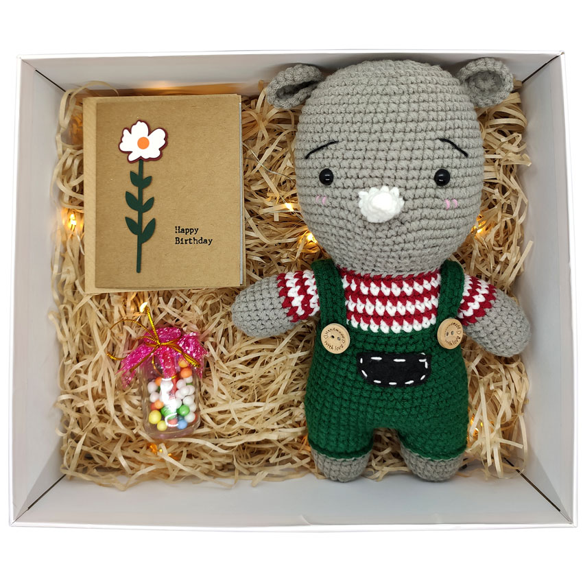
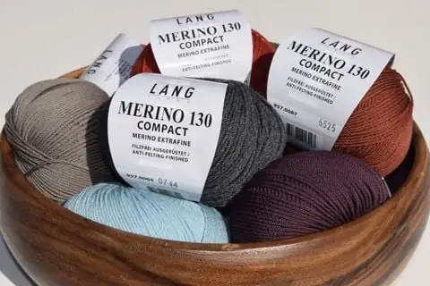

Xu Hướng Len Mới Nhất Năm 2025: Những Màu Sắc “Hot Trend” Không Thể Bỏ Lỡ

Năm 2025 đánh dấu sự bùng nổ mạnh mẽ của thế giới thời trang thủ công, đặc biệt là trong lĩnh vực đan móc với chất liệu len. Không chỉ dừng lại ở những kiểu đan sáng tạo, mà màu sắc của sợi len năm nay cũng chính là điểm nhấn tạo nên phong cách thời thượng cho người mặc.
5 Mẹo Hay Giúp Bạn Đan Móc Nhanh và Đẹp Hơn

Đan móc là một bộ môn nghệ thuật đòi hỏi sự kiên nhẫn và kỹ năng. Nếu bạn muốn cải thiện tốc độ và chất lượng sản phẩm, hãy thử áp dụng 5 mẹo đơn giản sau đây:
Gợi Ý Làm Quà Tặng Handmade Từ Len - Ý Nghĩa & Ấm Áp Cho Người Thân
Không cần những món quà đắt tiền, một sản phẩm đan móc thủ công từ len cũng có thể truyền tải đầy đủ tình cảm chân thành và sự quan tâm của bạn. Chính vì vậy, quà tặng handmade từ len ngày càng được ưa chuộng trong các dịp đặc biệt như sinh nhật, lễ Tết, Giáng sinh hay đơn giản chỉ là để gửi lời yêu thương bất ngờ.
Bí Quyết Chăm Sóc Len Merino Luôn Bền Đẹp Như Mới
Len Merino được yêu thích nhờ độ mềm mại, nhẹ và khả năng giữ nhiệt tuyệt vời. Tuy nhiên, chất liệu cao cấp này cũng đòi hỏi cách chăm sóc đặc biệt để giữ được độ bền và vẻ đẹp lâu dài.